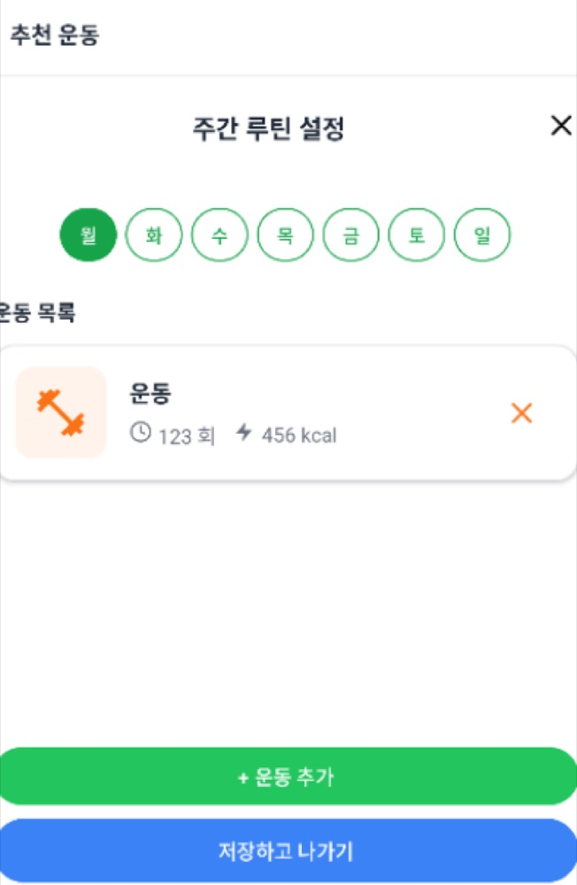
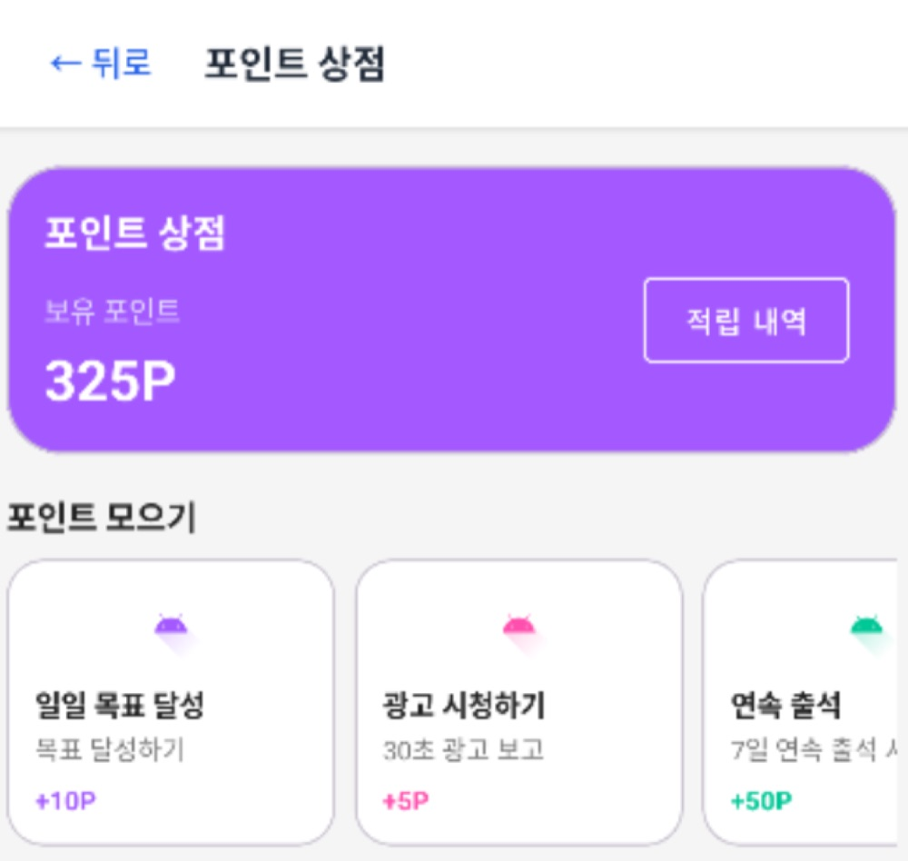

Projects
프로젝트
직무 연관도가 높은 순서로 정리했습니다. 모든 코드·커밋·PR은 GitHub에서 확인할 수 있습니다.
01KDD — 학사 규정 RAG 챗봇 백엔드RAG · AI 에이전트
학칙·학사 규정 PDF를 근거로, 출처와 함께 답하는 RAG 챗봇. AI가 지어내지 않고 실제 문서를 인용하게 만드는 것이 목표였습니다.
출처를 인용하는 대화형 AI 챗봇
답변 근거 문서·페이지 추적
답변 신뢰도 표시
시스템 아키텍처
→
Spring 백엔드 (담당)
문서 업로드·파싱·청킹 / FAQ·통계 / AI 서버 오케스트레이션
→
FastAPI AI 서버
임베딩(Cohere)·검색·리랭크·답변(AWS Bedrock Claude)
왼쪽 Spring 백엔드가 제 담당입니다. 오른쪽 AI 서버(임베딩·LLM 자체)는 팀원이 만들었고, 저는 그 서버를 호출·조율하는 백엔드를 구현했습니다.
나의 역할
- 문서 파이프라인 전체 구현 — PDF 업로드 → PDFBox 페이지별 파싱 → 페이지 경계를 넘지 않는 청킹(
550자·100자 오버랩) → AI 서버 임베딩 요청
- AI 서버 연동 3종(임베딩·삭제·FAQ 분석)을 클라이언트로 캡슐화하고 트랜잭션 경계를 재설계
- FAQ 자동 인입 파이프라인 구축 — 사용자 질문 수집 → AI 분석 → 학번·이메일·전화 PII 마스킹 → 관리자 검수 → FAQ 등록
- 다중 관리자 동시 승인을 막는 비관적 락 상태머신, 조회 중복을 제거한 인기 문서 집계, 정합성을 보장한 관리자 통계
트러블슈팅 — AI 호출이 DB 트랜잭션을 붙잡는 문제
- 문제
- 수십 초짜리 임베딩 호출이 트랜잭션 안에서 커넥션·락을 점유 → 동시 업로드 시 커넥션 풀 고갈 위험
- 원인
- 문서 저장(트랜잭션)과 임베딩(외부 네트워크)이 한 메서드에 묶여 있었음
- 해결
- 영속성 로직을 별도 트랜잭션으로 분리하고, 트랜잭션이 닫힌 뒤 AI를 호출하도록 경계를 재설계.
saveAndFlush로 PK 선확보
- 결과
- AI 외부 호출 중 DB 락 미점유, 업로드·재처리를 상태머신(
PROCESSING→COMPLETED/FAILED)으로 정리
결과 · 문서 파이프라인·FAQ 자동화·통계까지 백엔드 도메인 구현 · 병합 PR 13건 · 본인 작성 Flyway 마이그레이션 7건
비개발자에게 30초로 · 규정 PDF를 잘게 잘라 저장해두고, 질문이 오면 관련 조각만 찾아 그걸 근거로 답합니다. 그래서 답마다 "몇 페이지에서 가져왔는지" 출처가 붙죠. 제 백엔드는 문서를 자르고 보관하고 AI에 넘기고 결과를 정리하는 '주방' 역할입니다.
02두띵(Doothing) — AWS 위 AI 커스텀 디자인 플랫폼AWS · AI 도구
공동구매할 굿즈를 AI로 직접 디자인·가상 피팅하는 서비스. 전체 355커밋 중 251커밋을 작성한 최다 기여 프로젝트입니다.
 랜딩 — "우리의 상상을 현실로"
랜딩 — "우리의 상상을 현실로"
 펀딩 개설 · 카테고리 네비게이션
펀딩 개설 · 카테고리 네비게이션
 게시판 · 커뮤니티
게시판 · 커뮤니티
AWS 시스템 아키텍처
→
EC2 · Express+TS
REST 79개 · 인증 · 실시간 채팅 · AI 작업 큐
→
PostgreSQL · OpenAI
EC2 로컬 DB · 비동기 폴링으로 gpt-image 호출
나의 역할
- OpenAI gpt-image 기반 도면 생성·가상 피팅 서비스 단독 구현 — 중복 호출 캐시·일일 한도·과금 로그·타임아웃 등 비용/안정성 통제 내장
- AI 공급자 추상화 인터페이스 설계로
Gemini → OpenAI 무중단 전환(라우트 변경 없이)
- AWS 인프라 운영(EC2·S3·CloudFront·RDS)과
terser+AWS CLI 기반 배포 자동화
- Claude Code 등 AI 도구로 다회차 코드 감사 수행 — 커밋 251건 중 228건이 Claude 페어
트러블슈팅 — 70초짜리 AI 생성 vs 60초 CloudFront 타임아웃
- 문제
- AI 도면 생성이 CloudFront 오리진 타임아웃(60초) 안에 끝나지 않아 매번 실패
- 원인
- 동기 단일 요청이라 생성이 끝날 때까지 한 연결을 붙잡아 60초를 못 버팀
- 해결
- 입력 검증 후 작업 ID를
202로 즉시 반환, 생성은 백그라운드, 프론트가 3초 간격 폴링으로 결과 회수
- 결과
- 60초 벽을 넘겨 AI 생성이 타임아웃 없이 안정적으로 완료
트러블슈팅 — 빠르게 늘린 기능의 보안을 AI 도구로 따라잡기
- 해결
- Claude Code·CodeRabbit·Kiro를 워크플로에 넣고 OWASP·DB·리뷰 관점으로 감사 라운드를 20여 차례 반복 → 정규식 백트래킹 DoS·소켓 IDOR·마감 경합 등을 라운드마다 수정
- 결과
- 보안 결함을 반복적으로 제거. AI 도구를 일회성이 아닌 재현 가능한 절차로 활용한 경험
규모 · REST 엔드포인트 79개 · DB 마이그레이션 45개 중 37개 작성 · Python(numpy·rembg) 이미지 처리 툴 4종 · 크로스리전 RDS 지연 제거 위해 EC2 로컬 PostgreSQL 이전
03오늘어디(TodayWay) — 반복경로 출발 알림 PWA캡스톤 · 팀 1위
반복 일정·목적지를 등록하면 외부 경로 API로 권장 출발 시각을 계산해 웹 푸시로 알려주는 PWA. 2026 국민대 캡스톤, 팀 1위 기여.
 메인 — 권장 출발 시각·경로 안내
메인 — 권장 출발 시각·경로 안내
 경로 안내 — 구간별 소요·실시간 지도
경로 안내 — 구간별 소요·실시간 지도
 캘린더 — 반복 일정 관리
캘린더 — 반복 일정 관리
 설정 — 알림·계정
설정 — 알림·계정
나의 역할
- 백엔드 8개 도메인(인증·회원·일정·경로·푸시·지도·지오코딩·공통), 약 22개 REST 엔드포인트 단독 설계·구현
- ODsay·TMAP·Kakao 외부 API 3종 연동 및 장애 자동 복구 메커니즘 구축
- 권장 출발 시각 계산, PushScheduler 기반 VAPID 웹 푸시 알림
- 프론트: 첫 사용자용 17단계 온보딩 튜토리얼, 출/도착 지도 picker, 개발자 유형 테스트(24문항)
트러블슈팅 — 외부 경로 API 실패를 어떻게 회복할 것인가
- 문제
- ODsay가 일시 장애·키 만료로 실패하면 경로가 잠긴 채 회복 수단이 없어 알림 누락
- 분석
- 실패를 일시 장애·인증 만료·매핑 오류로 분류 — 재시도해도 소용없는 4xx를 대상에서 제외하는 게 핵심
- 해결
- 등록 시 1회 즉시 재시도 + 스케줄러가
5분 쿨다운·최대 5회 백그라운드 재시도, 401/403은 운영자에게 노출
- 결과
- 사용자 개입 없이 일시 장애가 약 25분 내 자동 복구. 단위 테스트 12건으로 회귀 차단
트러블슈팅 — 데모 직전 터진 500 (요일 6개 이상이면 등록 실패)
- 원인
- 요일 CSV 컬럼이
VARCHAR(20). 5요일(19자)은 통과하지만 6요일부터 길이 초과 — 특정 요일이 아니라 '요일 개수'가 원인
- 해결
- 컬럼을
VARCHAR(31)로 무중단 확장 + 입력 단계 유효성 검사로 400 선차단
- 결과
- 6요일 이상 정상 처리. 통합 테스트 3건(201/400/400)으로 재발 차단
결과 · 병합 PR 29건 · AWS Amplify·GitHub Pages 멀티 배포로 데모 완수 · 전역 예외처리 에러코드 18종, Flyway V1~V10
04Aivive — LLM 식단 건강관리 안드로이드 앱LLM 연동 · 원스토어 배포
수분·식사·운동을 기록하고 Gemini로 식단 조언을 받는 앱. 식단 도메인을 담당했습니다.
 메인 — 식단 관리 카드
메인 — 식단 관리 카드

기록·루틴 관리

포인트 적립
나의 역할
- Gemini를 식단 기능에 연동 — 식단 조언, 조언 기반 후속 질문 4개 자동 생성, 음식명 입력 시 예상 칼로리 자동 조회(비동기 콜백)
- 출력 형식을 제약한 프롬프트 + 정규식 후처리로 자연어 응답을 코드가 바로 쓸 정형 데이터로 가공
Room으로 음식 DB(엔티티·DAO·외래키 CASCADE)·캘린더·프로필 화면 제작
결과 · 병합 PR 4건 · 실제 소스 약 +2,900/-820줄 · 원스토어 배포 (AI 모델 초기화는 팀장, 식단 기능 연결은 본인)
05좀비 생존 FPS — Unity 게임C# · 시스템 설계
Unity·C# 좀비 생존·탐색 게임. 상점·무기 강화·능력치 업그레이드 등 게임 진행 시스템과 인게임 HUD를 담당했습니다.
 무기 시스템 — 능력치·강화 재료
무기 시스템 — 능력치·강화 재료
 아이템 상점
아이템 상점
 능력치 강화(스킬 트리)
능력치 강화(스킬 트리)
 인벤토리 · 월드 맵
인벤토리 · 월드 맵
 인게임 HUD · 거점 상호작용
인게임 HUD · 거점 상호작용
나의 역할
- 상점 → 인벤토리 → 무기/능력치 강화로 이어지는 게임 내 경제 루프를 데이터(ScriptableObject)-로직-UI 계층으로 분리 설계
- 인게임 HUD(나침반·탄약·낮밤 시계·레이더), 아이템 줍기 로직, 도메인별 사운드 매니저 등 C# 약 3,300줄(38개 스크립트) 구현
- 백엔드·AI 직무와는 거리가 있지만, 객체지향 설계와 시스템 통합·팀 협업을 보여주는 사례입니다.